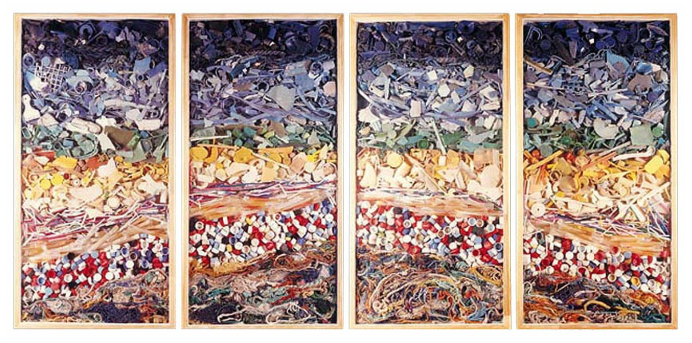

One interesting feature of our culture is “tingi” practice, which for the purpose of making goods affordable and accessible to all, allows goods to be sold in small portions. This has been the practice for a long reflecting our resilience and need to cater the entire community rather than a few privileged people infact.
Our Culture
From the colorful celebrations which are held to foster the unity of the people, to our people's long rooted tradition of hospitality or bayanihan, it is all part of our culture. It shows strong love and care towards one’s environment, family and happiness in all its forms. Our traditions are not just customs; rather shrines that depict our identity as a people that have endured, found means and are always hopeful on the odds presented before them.
The "Tingi" Culture
However, tingi has changed with the changing world and its negative consequences are worrisome. The use of single-use sachets and small pouches may be convenient but has aggravated the environmental problem. Such sachets, which are commonly used for shampoo coffee and sauce, become waste, block waterways, damage the soil and endanger all forms of life.
What used to be a resource preserving method has now become a source of environmental pressure, and offering solutions to this threat is one way of ensuring that one’s environment is intact.
Websites about this Issue:

Culture Now
Today, there is a growing movement in our country to address these challenges. People are becoming more conscious
regarding the negative impact of single-use plastics and trying to do something about environmental degradation.
This transition is being led by artists, musicians, and environmentalists who are using their careers to push social
change. Musicians write songs emphasizing eco-friendly practices, teachers include nature-friendly themes while
explaining concepts, while artists make paintings appealing to the need to conserve natural resources.

People take part in cleaning up polluted oceans, rivers, and woods as part of the initiative. Local business people
advocate the use of green products, while schools and organizations sensitize populations focusing on cutting down
waste and conservation. These initiatives demonstrate the ingenuity, tenacity, and strength of our people.
Our culture is changing for the better – not because we disregard our past, but rather because the past is alive,
and we are deriving the best from it to ensure improvement for the future.